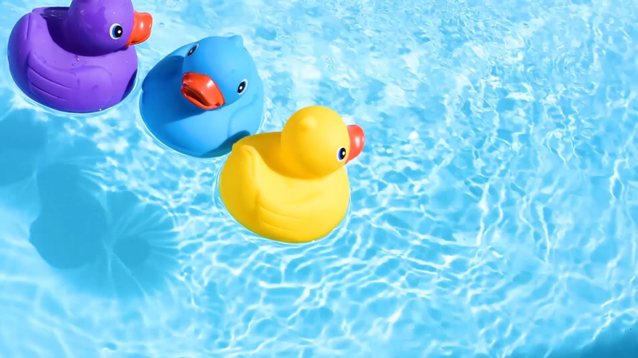

<div class="main" *ngIf="[0, 1, 2].includes(counter)">
  <div *ngIf="counter == 0">
    <td style="width:10%">
      <h1 style="text-align: center; ">{{'כמה ביצים יש בתמונה?'}}</h1>
    </td>
    
  </div>
  
  <div *ngIf="counter == 1">
    <td style="width:10%">
      <h1 style="text-align: center;">{{'כמה ברווזים יש בתמונה?'}}</h1>
    </td>
    
  </div>


  <mat-form-field appearance="fill" >
    <mat-label>Select</mat-label>
    <mat-select>
      <mat-option value="1">1</mat-option>
      <mat-option value="2">2</mat-option>
      <mat-option value="3">3</mat-option>
      <mat-option value="4">4</mat-option>
      <mat-option value="5">5</mat-option>
      <mat-option value="6">6</mat-option>
    </mat-select>
   
  </mat-form-field>
  <div>
  <button mat-raised-button color="primary" (click) = "counterUp()" >{{'המשך'}} </button>
</div>
  
 
 

